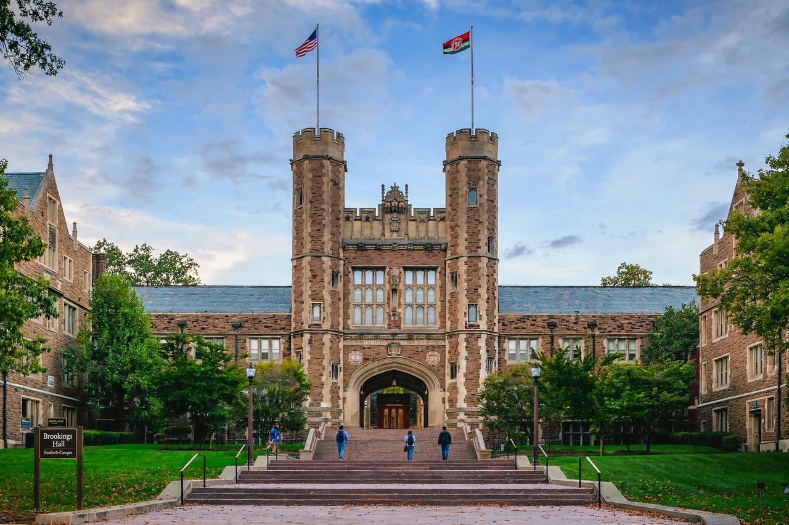

| Motto | Per Veritatem Vis ("Strength Through Truth") |
|---|---|
| Type | Private research university |
| Established | February 22, 1853 |
| Endowment | ~$12 billion (2023) |
| Chancellor | Andrew D. Martin |
| Students | ~17,000 |
| Location | St. Louis, Missouri, U.S. |
| Campus | Danforth Campus; Medical Campus |
| Nickname | Bears |
| Mascot | Bear |
Washington University in St. Louis (WashU) is a private research university in St. Louis, Missouri, United States. Founded in 1853 and named after George Washington (originally as Eliot Seminary, after founder William Greenleaf Eliot), it comprises seven undergraduate and graduate schools, including the highly ranked School of Medicine and the Olin Business School. Faculty and alumni include more than two dozen Nobel laureates, many in medicine and the sciences — a tradition that includes Salvador Luria's generation of molecular biologists and the work that produced the university's strength in genomics through the McDonnell Genome Institute.
The university was chartered in 1853 and renamed Washington University in 1856. Its main campus moved to the present Danforth Campus west of Forest Park in the early 1900s, using buildings constructed for the 1904 World's Fair administration. The School of Medicine, affiliated with Barnes-Jewish Hospital and St. Louis Children's Hospital, anchors one of the largest academic medical centres in the US.
The Danforth Campus is noted for its Collegiate Gothic architecture, centred on Brookings Hall. WashU is a member of the Association of American Universities and is classified among "R1: Doctoral Universities – Very high research activity." Its athletic teams, the Bears, compete in NCAA Division III.
Categories: Washington University in St. Louis | Private universities and colleges in Missouri | Educational institutions established in 1853